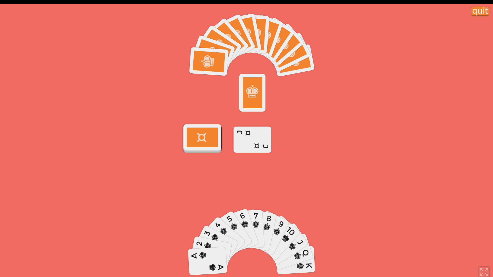
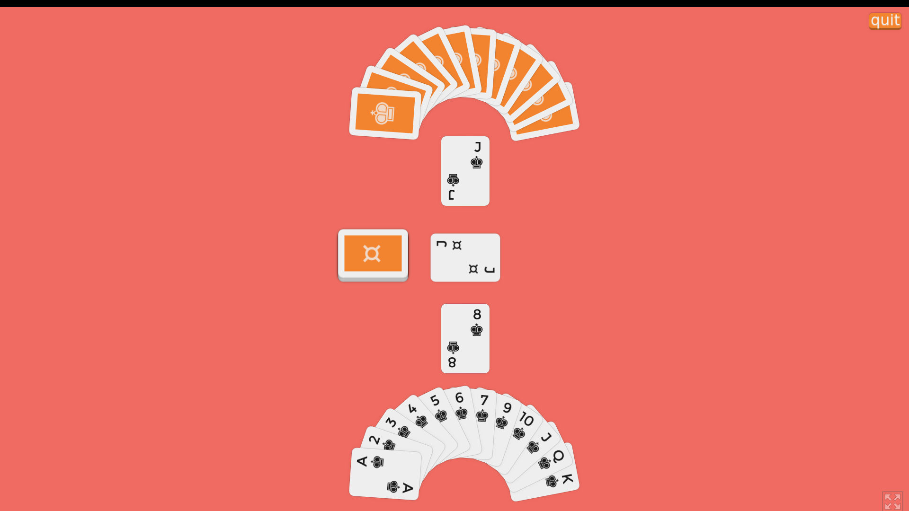
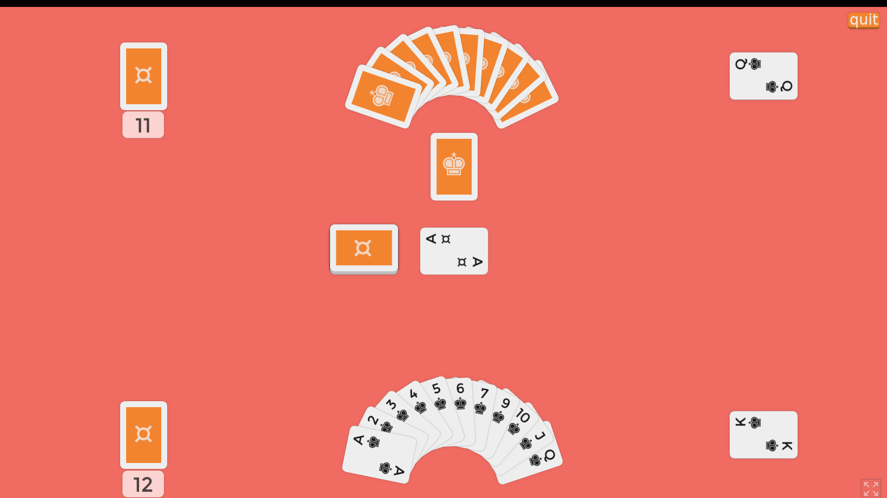
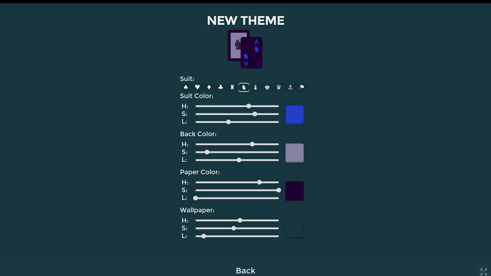

KNOWN is a digital version of a card game called Goofspiel, otherwise known as a 'game of perfect strategy.'
Initially planning on using this as an opportunity to experiment with neural networks, I ended up writing a state based AI system that still learns in a sense from the player.
 Every animation in the game is done with CSS3 transitions, and the game logic is written in Dartlang. Polymer JS components are used to micromanage the state of on-screen decks and cards.
 Some notable features include a music player with multiple songs, completely customizable themes, and an opponent that learns from your actions.